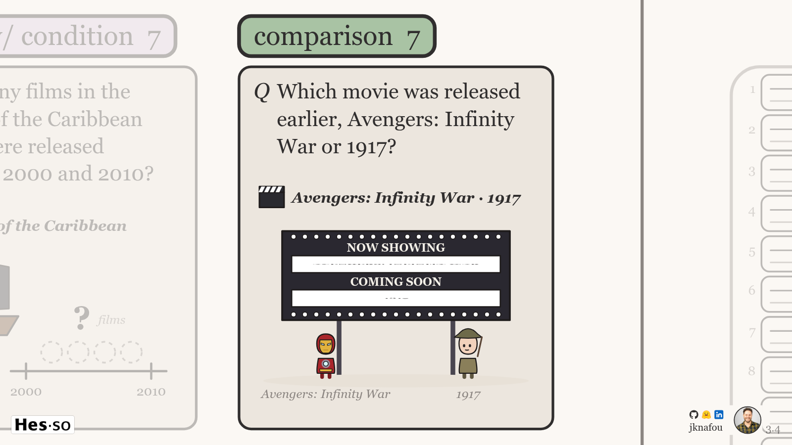
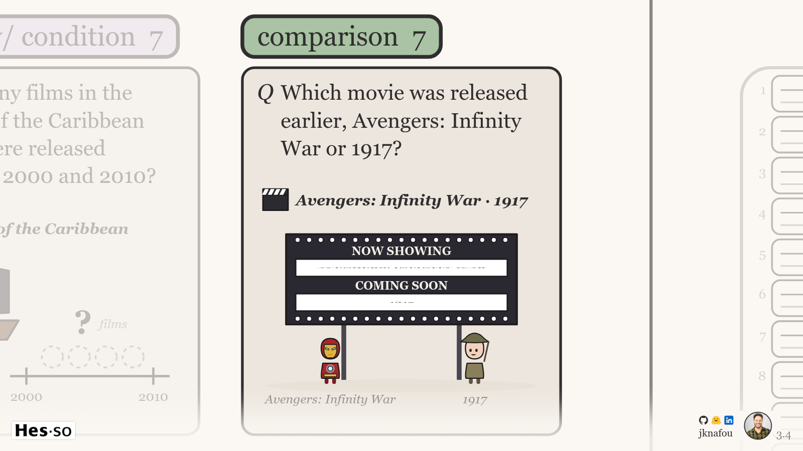
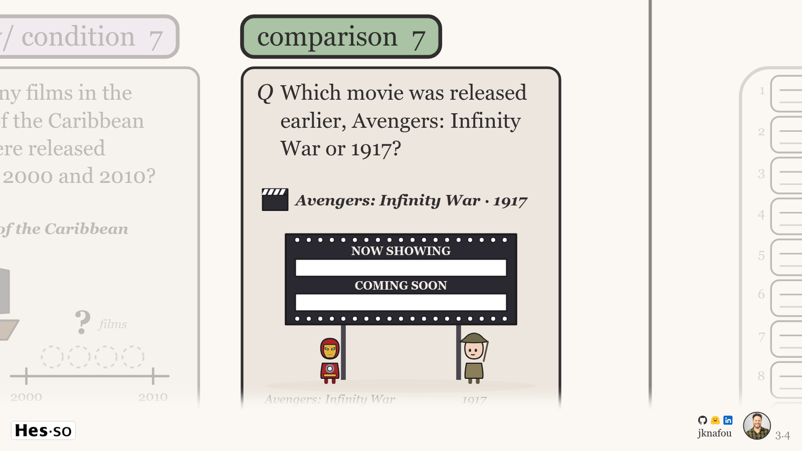
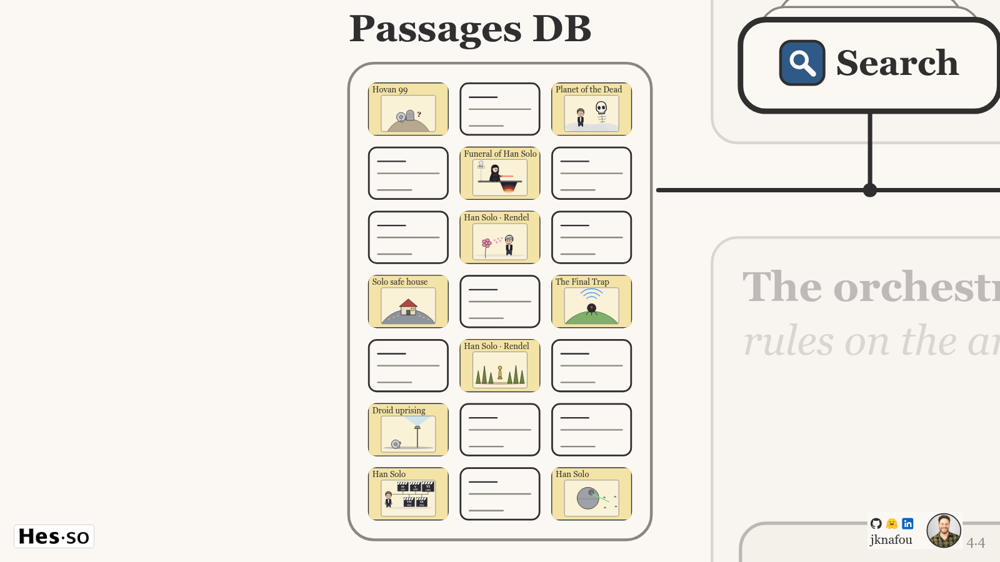
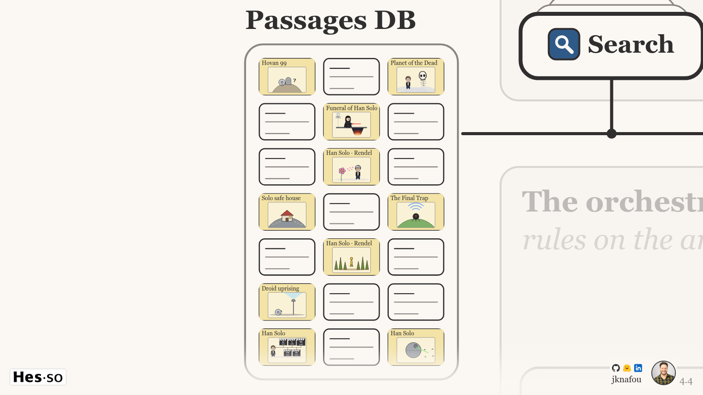
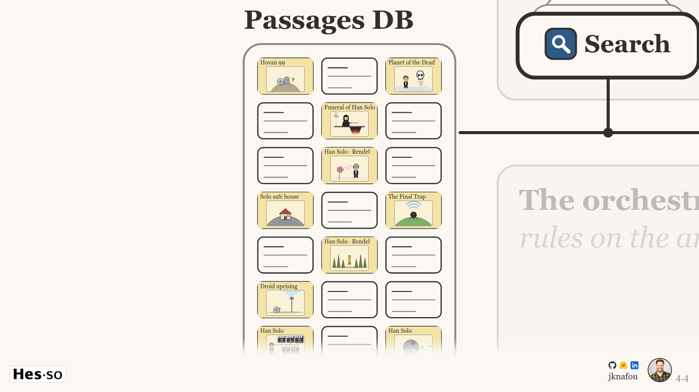
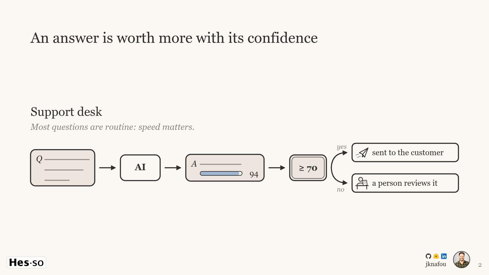

Paper (#FBF8F4, the deck's paper) behind the HES-SO mark, the corner unit and the number, full width, fading upward. It sits over every slide layer and under the veil and the marks, and it shows only where the marks show: never on the title, which draws its own foot (unchanged). Band B is live in the deck now. Each frame below is the deck at rest at that position (headless Chrome, 1600×900); under each, its lower half again, for comparing the foot row by row.
3.4 · Slide 3, step 4: the comparison card zoomed, its captions under the foot
Without the band (as before)

Band A, soft: at most 0.85 at the marks' foot, fading to 0 at y 770/900

Band B, solid: opaque from the foot to just above the marks' top (y 818), eased to 0 at y 770 (now in the deck)

4.4 · Slide 4, step 4: the passages DB zoomed, its last row under the foot
Without the band (as before)

Band A, soft: at most 0.85 at the marks' foot, fading to 0 at y 770/900

Band B, solid: opaque from the foot to just above the marks' top (y 818), eased to 0 at y 770 (now in the deck)

2 · Slide 2 at rest, without and with band B
WithoutBand B

1 · The title
No band: the shell hides it wherever the title covers the stage, exactly as it hides the marks there.